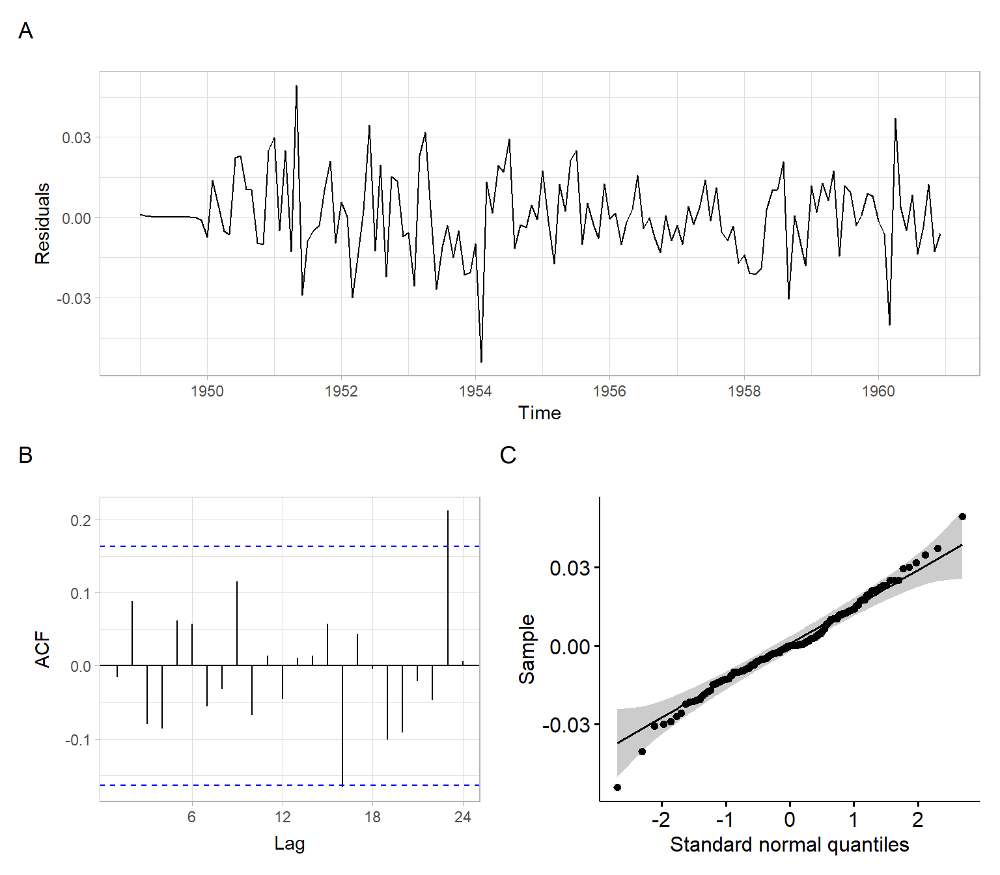

5Autoregressive Integrated Moving Average (ARIMA) Models
The goal of this lecture is to implement Box–Jenkins methodology for nonstationary time series, by applying differences and fitting an ARMA model to the stationary differenced series. You should be able to recognize when the differencing is needed based on the time series and ACF plots.
Objectives
List the steps of Box–Jenkins methodology.
Identify the order of differences \(d\) and order of seasonal differences \(D\) from the plots of original and differenced time series.
Recall how the orders \(p\) and \(q\) are identified using ACF and PACF plots for non-seasonal time series.
Identify the orders \(P\) and \(Q\) for seasonal time series.
We have already discussed the class of ARMA models for representing stationary series. A generalization of this class, which incorporates a wide range of nonstationary series, is provided by the autoregressive integrated moving average (ARIMA) processes, i.e., processes which, after differencing finitely many times, reduce to ARMA processes.
If \(d\) is a nonnegative integer, then \(X_t\) is an ARIMA(\(p, d, q\)) process if \(Y_t=(1 - B)^d X_t\) is a causal ARMA(\(p, q\)) process. The process is stationary if \(d = 0\), in which case it reduces to an ARMA(\(p, q\)) process.
For example \(X_t\) is an ARIMA(1,1,0) process, then \(Y_t\) representing the series of its first-order differences (because \(d = 1\)) is an ARMA(1,0) process \[
Y_t = (1 - B)X_t = \phi_1 Y_{t-1} + Z_t,
\] where \(|\phi_1| < 1\) and \(Z_t\) is white noise.
An equation for ARIMA(\(p, d, q\)) is \[
(1 - B)^d (1 - \phi_1B - \dots - \phi_pB^p)X_t =
(1 + \theta_1B + \dots + \theta_qB^q)Z_t,
\tag{5.1}\] where \(B\) is the backshift operator, \(d\) is the order of differences, \(\phi_1, \dots, \phi_p\) are autoregression coefficients, \(p\) is the autoregressive order, \(\theta_1, \dots, \theta_q\) are moving average coefficients, \(q\) is the moving average order, and \(Z_t\sim \mathrm{WN}(0,\sigma^2)\). The left part of Equation 5.1 consists of the differences and the AR part; the right part represents the MA part.
Note
Modifications of Equation 5.1 exists, such as those having both the AR and MA parts on the right side. This affects the signs of estimated coefficients \(\phi_1, \dots, \phi_p\) and possibly \(\theta_1, \dots, \theta_q\). Check the help files of the software to know the exact form of the model it is estimating.
Why the process is called ‘integrated’?
Recall the geometric interpretation of the integral of a curve \(y = f(x)\) defined on continuous \(x\). The integral of \(y\) corresponds to the area under the curve. For example, if \(y = f(x)\) is a function describing income \(y\) based on working time \(x\), the integral corresponds to the total income in a certain period.
In our lectures, we deal with time series defined using discrete times \(t\) (for example, years), so yearly income is \(Y_t\), and the total income over several years can be obtained by summing the individual annual incomes, \(\sum Y_t\). Hence, here we integrate by summation.
Recall the definition of random walk series, which is a cumulative sum of i.i.d. noise: \[
X_t = \sum_{i=1}^t Y_i,
\] where \(Y_t \sim\) i.i.d.(\(0,\sigma^2\)). This \(X_t\) is the simplest example of integrated series. The notation \(X_t \sim\) I(1) means \(X_t\) is a first-order integrated series. The differences of \(X_t\)\[
\begin{align}
(1 - B)X_t &= X_t - BX_t \\
&= X_t - X_{t-1} \\
&= Y_t
\end{align}
\] give us back the uncorrelated series \(Y_t\), hence the process \(X_t\) is an ARIMA(0,1,0) process.
Note
ARIMA(\(p, d, q\)) processes with \(d \geqslant 1\) are also called difference-stationary processes or processes with a stochastic trend. I.e., difference-stationary means the process is not stationary but can be made stationary by proper differencing.
5.2 Box–Jenkins methodology
The approach developed by Box and Jenkins (1976) applies the differencing to the original time series repeatedly, until a stationary time series is obtained. We will first learn how to identify the number of differences (i.e., the order of differences \(d\)) by analyzing plots of the time series and ACF at each iteration of the method. In the later lecture on detecting trends in time series, we will also introduce formal tests for the integration order.
Below is a general algorithm used to fit ARIMA(\(p, d, q\)) models
Start assuming \(d = 0\).
Plot the time series and ACF.
If the plots suggest nonstationarity, iterate differencing and plotting to update \(d\):
Apply differences of the current time series, write \(d = d + 1\)
Plot the time series and ACF
If nonstationarity is still obvious, repeat the differencing and plotting
Identify the orders \(p\) and \(q\) from the plots of ACF and PACF of the latest (differenced) time series.
Estimate the model.
Apply model diagnostics, particularly for homogeneity, uncorrelatedness, and normality of residuals. Address the violations by respecifying the model.
Forecast with the resultant model.
Using the Box–Jenkins methodology, the linear predictor approximately follows a normal distribution, i.e., \[
\hat{X}_{n+h} \sim N\left( X_{n+h}, \mathrm{var}(\hat{X}_{n+h}) \right).
\]
Therefore, a \((100 - \alpha)\)% prediction interval is \[
\hat{X}_{n+h} \pm z_{1-\alpha/2} \sqrt{\mathrm{var}(\hat{X}_{n+h})}.
\]
Example: ARIMA for Lake Baikal
Here we find an ARIMA model for the Lake Baikal thaw (breakup) dates from the Global Lake and River Ice Phenology Database (Benson et al. 2020).
Code
# Calculate calendar day from ice break-up dateB<-read.csv("./data/baikal.csv", skip =1)%>%mutate(Date_iceoff =as.Date(paste(iceoff_year, iceoff_month, iceoff_day, sep ="-")))%>%mutate(DoY_iceoff =as.numeric(format(Date_iceoff, "%j")))# Convert to ts formaticeoff<-ts(B$DoY_iceoff, start =B$iceoff_year[1])
Figure 5.1 shows that there is possibly a decreasing trend (ice melts earlier in the year), although the ACF declines fast.
Code
X<-iceoffp1<-forecast::autoplot(X)+xlab("Year")+ylab("Ice breakup day")+theme_light()p2<-forecast::ggAcf(X)+ggtitle("")+theme_light()p3<-forecast::ggAcf(X, type ="partial")+ggtitle("")+theme_light()p1/(p2+p3)+plot_annotation(tag_levels ='A')
Figure 5.1: Plots for the original time series of ice breakup days.
To remove this potential trend, we apply differencing once (more specifically, consecutive differencing, \(X_t - X_{t-1}\)) and produce the plots again. From Figure 5.2, there is no tendency in the differenced series, and the ACF declines fast, so we achieved stationarity and no need to difference the data more. Overall, we differenced the time series once to achieve stationarity, so the order of differences \(d = 1\).
Code
X<-diff(iceoff)p1<-ggplot2::autoplot(X)+xlab("Year")+ylab("diff(Ice breakup day)")+theme_light()p2<-forecast::ggAcf(X)+ggtitle("")+theme_light()p3<-forecast::ggAcf(X, type ="partial")+ggtitle("")+theme_light()p1/(p2+p3)+plot_annotation(tag_levels ='A')
Figure 5.2: Plots for the differenced time series of ice breakup days.
Continue working with Figure 5.2 to identify the orders \(p\) and \(q\). If we treat the behavior of ACF as exhibiting a cut-off, and PACF having an exponential decay, an MA(\(q\)) model might be plausible (i.e., \(p = 0\)). Since the ACF cuts off after lag 1, \(q = 1\) in this case.
Hence, we specified the model for ice breakup dates to be ARIMA(0,1,1), which can be written as \[
(1 - B) Y_t = (1 + \theta_1B)Z_t
\] or \[
Y_t = Y_{t-1} + \theta_1 Z_{t-1} + Z_t,
\] where \(Y_t\) represents the ice breakup dates in the year \(t\), \(\theta_1\) is the moving average coefficient, and \(Z_t\sim \mathrm{WN}(0,\sigma^2)\).
We can now estimate the model, for example, using stats::arima().
mod_baikal<-stats::arima(iceoff, order =c(0, 1, 1))mod_baikal
In the next step, we apply diagnostic checks for the residuals, for example, using plots (Figure 5.3). Remember that the residuals should resemble white noise.
Code
e<-mod_baikal$residualsp1<-ggplot2::autoplot(e)+ylab("Residuals")+theme_light()p2<-forecast::ggAcf(e)+ggtitle("")+theme_light()p3<-ggpubr::ggqqplot(e)+xlab("Standard normal quantiles")+theme_light()p1/(p2+p3)+plot_annotation(tag_levels ='A')
Figure 5.3: Residual diagnostics for the ARIMA(0,1,1) model for ice breakup dates.
Given that the diagnostics plots show satisfactory behavior of the residuals (Figure 5.3), continue with forecasting using this model (Figure 5.4). Note that ARIMA(0,1,1) is mathematically equivalent to simple exponential smoothing, hence the forecast is a horizontal line.
Code
ggplot2::autoplot(forecast::forecast(mod_baikal, h =10))+xlab("Year")+ylab("Ice breakup day")+ggtitle("")+theme_light()
Figure 5.4: ARIMA(0,1,1) model predictions of ice breakup dates 10 years ahead.
5.3 Seasonal ARIMA (SARIMA)
Recall that time series with seasonal variability or another strictly periodic component (e.g., daily cycles) can be deseasonalized by applying differencing that is not of consecutive values but with a lag equal to the period of the cyclical variability. We will use such differences to remove strong periodicity, as an additional step in the Box–Jenkins algorithm.
Similar to the regular differences, we will apply seasonal differences not to eliminate autocorrelations at the corresponding lags, but to achieve fast decay of ACF at seasonal lags. Even after the seasonal differences, there might be significant spikes at the seasonal lags in ACF and PACF, which can be addressed by selecting proper seasonal autoregressive and moving average orders. Therefore, we can define orders of integration, AR, and MA for the seasonal part of the time series in the same way we define these orders for the non-seasonal part.
Based on the definitions in Brockwell and Davis (2002), \(X_t\) is a seasonal autoregressive integrated moving average, SARIMA(\(p,d,q\))(\(P,D,Q\))\(_s\) process if the differenced series \(Y_t=(1 - B)^d (1 - B^s)^D X_t\) is a causal ARMA process. Here \(d\) and \(D\) are nonnegative integers, and \(s\) is the period.
Note
In practice, \(D \leqslant 1\) and \(P, Q \leqslant 3\).
An equation for SARIMA(\(p, d, q\))(\(P, D, Q\))\(_s\) is \[
\begin{split}
(1 - B)^d (1 - \phi_1B - \dots - \phi_pB^p) (1 - B^s)^D (1 - \Phi_1B^s - \dots - \Phi_PB^{sP}) X_t \\
= (1 + \theta_1B + \dots + \theta_qB^q) (1 + \Theta_1B^s + \dots + \Theta_QB^{sQ})Z_t,
\end{split}
\tag{5.2}\] where \(D\) is the order of seasonal differences, \(\Phi_1, \dots, \Phi_P\) are the seasonal autoregression coefficients, \(P\) is the seasonal autoregressive order, \(\Theta_1, \dots, \Theta_q\) are seasonal moving average coefficients, \(Q\) is the seasonal moving average order, and the rest of the terms are the same as in Equation 5.1.
Example: SARIMA for the number of airline passengers
Here we revisit the time series on airline passengers from which we have removed the trend by taking regular non-seasonal differences once (\(d = 1\)). Notice from Figure 5.5 C and D how after taking the usual differences the upward trend disappeared, and ACF started to decay much faster. At the seasonal lags, however, the ACF decays still linearly (Figure 5.5 D), which suggested differencing at the seasonal lag to remove strong periodicity. After taking seasonal differences once (\(D = 1\)), the time series looks stationary (Figure 5.5 E), and the ACF decays fast at both seasonal and non-seasonal lags. This is enough differencing.
Figure 5.5: Time series plot of the airline passenger series with an estimated ACF and the detrended (differenced) series with their ACFs.
For the next step, see Figure 5.6 to identify the orders \(p\) and \(q\). For that, look only at the non-seasonal lags, 1–11. Both ACF and PACF have significant values at lags 1 and 3, which could correspond to AR(3), MA(3), ARMA(1,1), or ARMA with higher orders. From these options ARMA(1,1) has fewer parameters, hence we prefer this model, with \(p = 1\) and \(q = 1\), as the most parsimonious option. (However, given that the correlations at lag 2 are not statistically significant, information criteria may penalize adding extra arguments and might prefer a more compact specification, AR(1) or MA(1).)
Next, use Figure 5.6 again to identify orders \(P\) and \(Q\). Now look only at the seasonal lags 12, 24, 36, etc. Both the ACF and PACF have significant values only on the first of those lags (lag 12), which could correspond to AR(1), MA(1), or ARMA(1,1) for the seasonal component. From these options, AR(1) and MA(1) are the most parsimonious so we should select one of them or use some numeric criterion to select the best model (e.g., information criterion like AIC or forecasting accuracy on a testing set).
Code
p6<-forecast::ggAcf(D1D12, lag.max =36)+ggtitle("(1-B)(1-B12)Yt")+xlab("Lag (months)")+theme_light()p7<-forecast::ggAcf(D1D12, lag.max =36, type ="partial")+ggtitle("(1-B)(1-B12)Yt")+xlab("Lag (months)")+theme_light()p6+p7+plot_annotation(tag_levels ='A')
Figure 5.6: ACF and PACF of the differenced airline passenger time series \((1-B)(1-B^{12})Y_t\).
Overall, our analysis suggested that SARIMA(1,1,1)(1,1,0) or SARIMA(1,1,1)(0,1,1) is a plausible model for this time series. For example, estimate SARIMA(1,1,1)(0,1,1):
mod_air<-stats::arima(Yt, order =c(1, 1, 1), seasonal =list(order =c(0, 1, 1), period =12))mod_air
The orders selected automatically based on AIC suggest that indeed the non-significance of correlations at lag 2 and relatively low correlations at lag 3 made it not worthy to estimate additional parameters in the non-seasonal part, for which MA(1) specification was selected, not the suggested ARMA(1,1), AR(3), or MA(3).
In the next step, we apply diagnostic checks for the residuals, for example, using plots (Figure 5.7).
Code
e<-mod_air$residualsp1<-ggplot2::autoplot(e)+ylab("Residuals")+theme_light()p2<-forecast::ggAcf(e)+ggtitle("")+theme_light()p3<-ggpubr::ggqqplot(e)+xlab("Standard normal quantiles")+theme_light()p1/(p2+p3)+plot_annotation(tag_levels ='A')

Figure 5.7: Residual diagnostics for the SARIMA model for the airline passenger data.
Given that the diagnostics plots show satisfactory behavior of the residuals (Figure 5.7), continue with forecasting using this model (Figure 5.8).
Code
ggplot2::autoplot(forecast::forecast(mod_air, h =24))+xlab("Year")+ylab("lg(Air passangers)")+ggtitle("")+theme_light()
Figure 5.8: SARIMA model predictions of airline passenger data 2 years ahead.
Compare ACF in Figure 5.7 with ACF of regression residuals in Figure 3.15 and Figure 3.16. The residuals of those regression models are autocorrelated, while the models have more parameters than the specified SARIMA models. Hence, the SARIMA model is much better for this time series.
5.4 Conclusion
In this lecture, we discovered ARIMA as an extension of ARMA modeling to nonstationary data and SARIMA as an extension of ARIMA models to time series with periodicity (seasonality).
We learned Box–Jenkins iterative procedure for identifying such models, including the orders of differences, \(d\) and \(D\), and \(p\), \(q\), \(P\), and \(Q\).
Please remember to specify the criterion for selecting a model beforehand and consider such options as cross-validation and using a testing set.
5.5 Appendix
Equivalences
Mathematically, some models are equivalent one to another. Below are some examples.
Forecasts of ARIMA(0,1,1) are equivalent to simple exponential smoothing.
An ARIMA(0,1,1) model can be written as \[
Y_t = Y_{t-1} + \theta_1 Z_{t-1} + Z_t,
\] from which the one-step-ahead forecast is \[
\hat{Y}_t = Y_{t-1} + \theta_1 (Y_{t-1} - \hat{Y}_{t-1}).
\] If we define \(\theta_1 = \alpha - 1\), then the above equation transforms to \[
\begin{split}
\hat{Y}_t &= Y_{t-1} + (\alpha - 1) (Y_{t-1} - \hat{Y}_{t-1})\\
&= Y_{t-1} + (\alpha - 1) Y_{t-1} - (\alpha - 1) \hat{Y}_{t-1}\\
&= \alpha Y_{t-1} + (1 - \alpha) \hat{Y}_{t-1}
\end{split}
\]
Forecasts of ARIMA(0,2,2) are equivalent to Holt’s method.
Forecasts of SARIMA(0,1,\(s+1\))(0,1,0)\(_s\) are equivalent to Holt–Winters additive method.